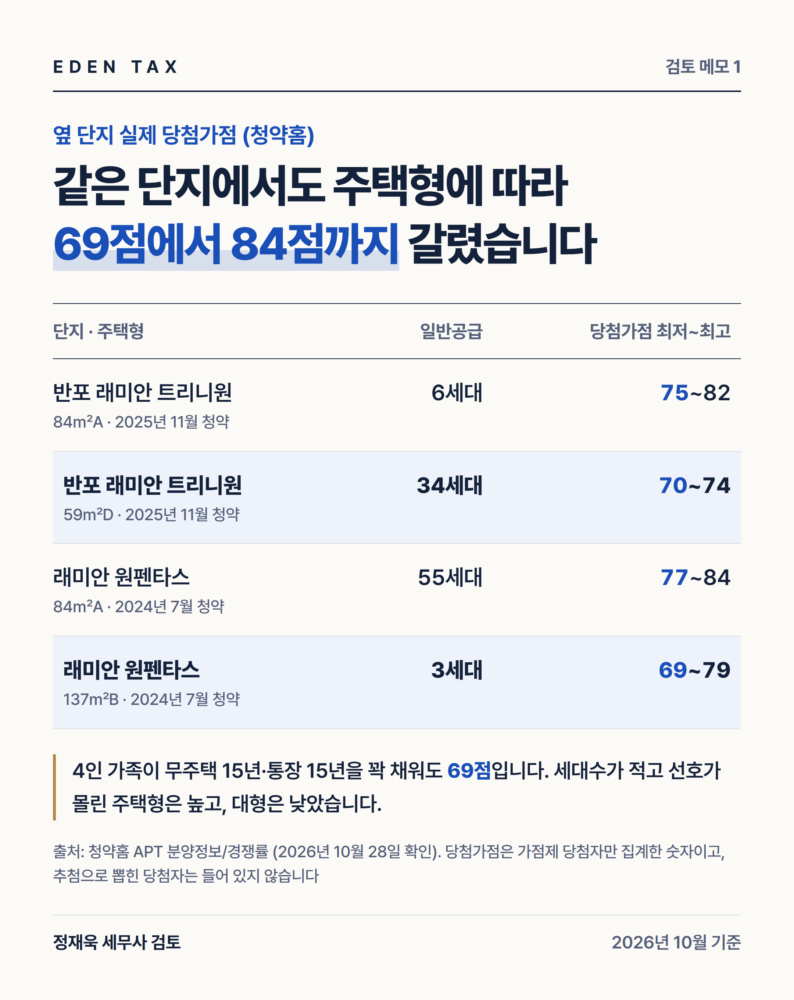
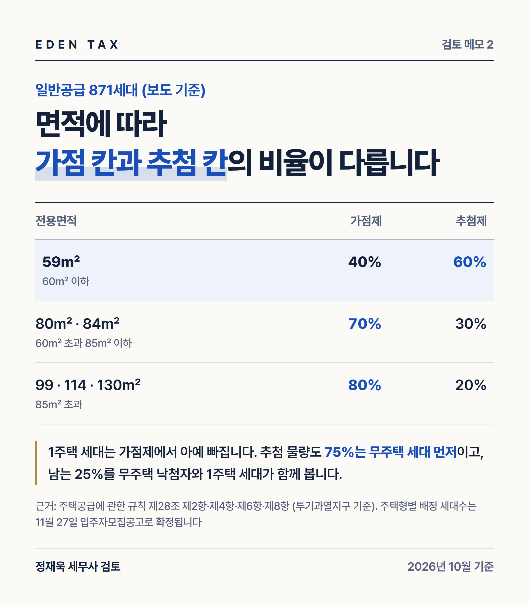
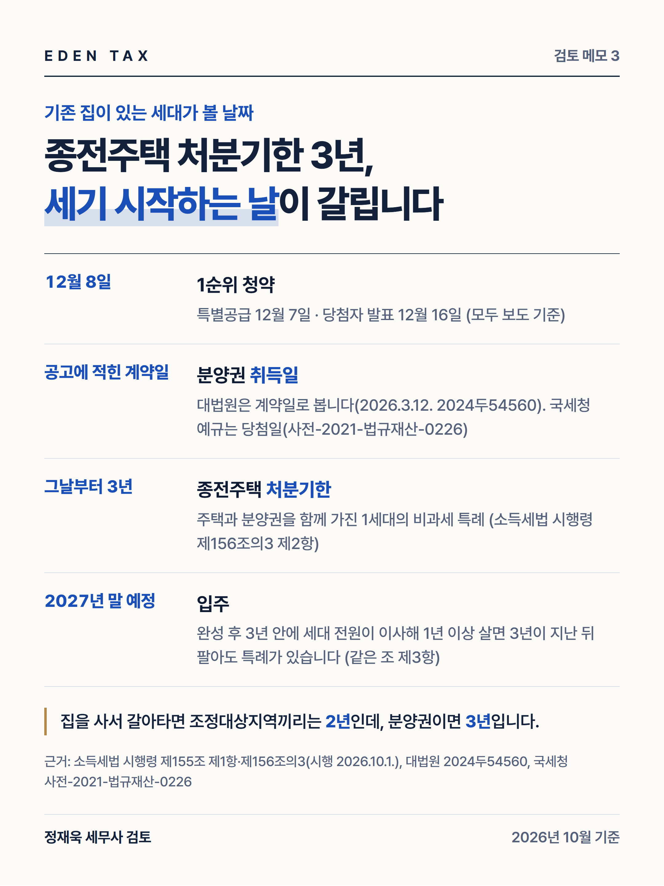

디에이치 반포124는 반포주공1단지 1·2·4주구를 다시 짓는 5,007세대 단지입니다. 보도에 따르면 입주자모집공고는 11월 27일, 특별공급은 12월 7일, 1순위 청약은 12월 8일이고 일반분양 1,801가구 가운데 일반공급은 871가구입니다. 분양가는 공고에서야 나오지만, 871세대를 누가 어떤 방법으로 나눠 갖는지는 이미 법령에 정해져 있습니다. 내 세대가 어느 자리에서 경쟁하는지부터 확인하는 편이 순서입니다. (2026년 10월 28일 기준)
청약 가점 84점은 이렇게 만들어집니다
| 가점 항목 | 상한 | 만점을 받으려면 |
|---|---|---|
| 무주택기간 | 32점 | 15년 이상 |
| 부양가족 수 | 35점 | 6명 이상 |
| 청약통장 가입기간 | 17점 | 15년 이상 |
| 합계 | 84점 |
부양가족 점수는 0명 5점에서 시작해 1명마다 5점씩 올라갑니다. 본인·배우자·자녀 둘인 4인 가족은 부양가족이 3명(20점)이라, 무주택기간과 통장 기간을 모두 채워도 69점이 한계입니다. 70점을 넘으려면 부양가족이 4명 이상이어야 합니다. 배점은 주택공급에 관한 규칙 별표 1에 있고, 입주자모집공고에도 같은 표가 실립니다.
옆 단지 커트라인이 말해 주는 것

청약홈에 공개된 반포 래미안 트리니원(2025년 11월)의 당첨가점은 59㎡D형 최저 70점, 84㎡A형 최저 75점·최고 82점이었습니다. 래미안 원펜타스(2024년 7월)는 84㎡A형 최저 77점·최고 84점, 137㎡B형은 최저 69점이었습니다. 같은 단지 안에서도 주택형에 따라 15점가량 벌어졌습니다.
여기서 놓치기 쉬운 것이 청약홈이 표 아래에 적어 둔 한 줄입니다. 당첨가점은 가점제로 뽑힌 당첨자만 집계한 숫자이고, 추첨으로 당첨된 사람은 이 통계에 들어 있지 않습니다. 커트라인 70점은 가점제 칸의 경계선이지 그 단지 당첨자 전체의 경계선이 아닙니다.
871세대는 한 줄로 서지 않습니다

서초구는 투기과열지구입니다. 민영주택 일반공급은 전용 60㎡ 이하가 가점제 40%, 60㎡ 초과 85㎡ 이하가 70%, 85㎡ 초과가 80%이고 나머지가 추첨제입니다(주택공급에 관한 규칙 제28조 제2항·제4항). 반포124는 59·80·84·99·114·130㎡로 공급될 예정이라, 59㎡는 추첨 몫이 60%로 가장 크고 주력인 84㎡는 30%입니다.
집이 한 채 있는 세대는 가점제 대상에서 제외됩니다(같은 조 제6항). 가점이 몇 점이든 추첨 물량만 바라봅니다. 그 추첨 물량도 75%는 무주택세대구성원에게 먼저 돌아가고, 남은 25%를 무주택세대구성원과 1주택 세대가 함께 봅니다(같은 조 제8항). 가점제에서 떨어진 무주택 신청자도 별도 신청 없이 이 추첨에 다시 들어옵니다(같은 조 제7항).
사례: 세 가구는 각각 어디에서 경쟁할까
세 가구를 놓고 보겠습니다. 모두 서울에 살고 청약통장 가입 2년을 넘겼으며 세대주입니다.
| A 가구 | B 가구 | C 가구 | |
|---|---|---|---|
| 세대 구성 | 부부 + 자녀 2 | 부부 + 자녀 2 + 무주택 부모 2 | 부부 + 자녀 1 |
| 주택 | 무주택 14년 | 무주택 16년 | 서울 아파트 1채 |
| 부양가족 | 3명 | 5명 | 2명 |
| 가점(계산) | 30 + 20 + 17 = 67점 | 32 + 30 + 17 = 79점 | 가점 계산 의미 없음 |
| 경쟁하는 자리 | 가점제 + 추첨 75% 몫 | 가점제 | 추첨 25% 몫 |
- A 가구는 가점제에 신청할 수 있지만 67점으로는 옆 단지 실적에 못 미칩니다. 다만 가점제에서 떨어져도 추첨 대상에 자동으로 포함되므로, 추첨 비율이 높은 59㎡를 함께 보는 것이 현실적입니다.
- B 가구는 부모님 두 분을 부양가족에 넣어 79점이 됩니다. 단 신청자가 세대주이고 공고일 기준 최근 3년 이상 계속 같은 세대별 주민등록표에 올라 있어야 하며, 부모님 중 한 분이라도 집이나 분양권을 갖고 있으면 두 분 모두 부양가족에서 빠집니다.
- C 가구는 집이 한 채 있어 가점제에서 제외됩니다. 추첨 물량이 100세대라면 들어갈 수 있는 칸은 25세대입니다.
부모님 집은 한쪽에서는 빠지고 한쪽에서는 걸립니다
같은 '부모님 집'인데 규정이 두 방향으로 작동합니다. 일반공급에서 세대의 주택 수를 셀 때는 60세 이상 직계존속이 가진 주택과 분양권을 빼고 봅니다(같은 규칙 제53조 제6호). 부모님이 집을 갖고 계셔도 1순위 자격과 무주택 판정에는 걸리지 않습니다. 반면 가점제 부양가족 수를 셀 때는 이 규정을 적용하지 않아 부양가족에서 제외됩니다(별표 1 제1호 나목). 특별공급에서 무주택세대구성원을 따질 때도 제53조 제6호를 적용하지 않으므로 부모님 집이 그대로 걸립니다.
그래서 "부모님 집을 정리하면 점수가 오르느냐"는 질문이 나옵니다. 파시면 양도세가 나오고 자녀에게 증여하시면 증여세와 취득세가 함께 발생합니다. 청약 점수와 같은 자리에 놓고 비교할 문제가 아닙니다.
세대를 합치실 계획이라면 연령 기준이 세목마다 다른 점도 보셔야 합니다. 1주택자가 1주택을 가진 60세 이상 직계존속과 동거봉양을 위해 합가해 2주택이 되면 합친 날부터 10년 안에 먼저 파는 주택은 1세대 1주택으로 봅니다(소득세법 시행령 제155조 제4항). 취득세에서 동거봉양 합가를 별도 세대로 보는 기준은 65세 이상입니다(지방세법 시행령 제28조의3 제2항).
2주택 세대라면 공고일 전에 계산부터
2주택 이상인 세대는 투기과열지구에서 1순위 자격 자체가 없습니다(같은 규칙 제28조 제1항). 청약 자격은 입주자모집공고일 현재로 판정하므로, 한 채를 정리하려면 11월 27일 전에 잔금까지 받아야 합니다.
그런데 2026년 5월 10일부터 다주택자 양도세 중과가 다시 적용되고 있습니다. 조정대상지역 주택을 2주택 상태에서 팔면 기본세율에 20%p가 더해지고 장기보유특별공제도 받지 못합니다(소득세법 제104조 제7항, 제95조 제2항). 정부가 2026년 8월에 내놓은 세제개편안은 보유기간 2년 이상 주택의 중과세율을 2027년 양도분부터 +5%p로 낮추는 내용을 담고 있지만, 국회 심의 중인 정부안입니다. 한 달을 맞추려 올해 파는 것과 개편 결과를 보고 내년에 파는 것의 차이는 수억 원대 주택이라면 작지 않습니다.
당첨 뒤에는 날짜가 쟁점입니다

기존 집이 있는 상태에서 당첨되면, 주택과 분양권을 함께 보유한 1세대는 분양권을 취득한 날부터 3년 이내에 종전주택을 팔아야 1세대 1주택 비과세 특례를 받습니다(소득세법 시행령 제156조의3 제2항). 3년이 지난 뒤에 팔아도 새 집이 완성된 후 3년 안에 세대 전원이 이사해 1년 이상 거주하고, 완성 전 또는 완성 후 3년 안에 종전주택을 팔면 같은 특례가 적용됩니다(같은 조 제3항). 집을 사서 갈아타는 경우는 2026년 10월 1일부터 두 집이 모두 조정대상지역이면 2년으로 줄었지만(같은 영 제155조 제1항 제1호), 분양권은 3년이 그대로입니다.
기산점인 '분양권을 취득한 날'은 판단이 갈립니다. 국세청은 청약 당첨 후 분양계약을 한 경우 취득시기를 청약당첨일로 보아 왔습니다(사전-2021-법규재산-0226). 그러나 대법원은 2026년 3월 12일 선고한 2024두54560 판결에서 청약 당첨은 계약을 체결할 수 있는 지위를 주는 데 그친다고 보아 분양계약일을 기준으로 판단했습니다. 당첨자 발표가 12월 16일이고 계약일은 공고에서 정해지므로 두 날짜가 해를 넘길 수 있습니다.
취득세는 또 다른 날짜를 봅니다. 세율을 정하는 주택 수는 분양사업자로부터 분양권을 취득하는 경우 분양계약일 기준으로 셉니다(지방세법 시행령 제28조의4 제1항). 세율은 계약일에 정해지고 실제로 내는 시점은 몇 년 뒤 잔금일입니다.
공고를 보고 정하실 것
청약 자격을 맞추려고 집을 급히 정리하다가 세금에서 더 큰 금액을 내시는 경우를 봅니다. 가점을 올리려 부모님 집을 손대거나 공고일에 맞추려 두 번째 집을 중과세율로 파는 결정은 당첨 가능성이 확실할 때만 의미가 있습니다. 주택형별 물량과 분양가는 11월 27일 공고에서야 나옵니다. 공고를 보고 내 세대가 어느 칸에 들어가는지 확인한 다음, 기존 집 처분 순서와 시점을 정하시기 바랍니다.
— 정재욱 세무사
에덴택스는 국세청 출신 세무사가 양도·상속·증여·취득까지 부동산 세금을 직접 봅니다. 세대원 전원의 주택·분양권 현황, 청약통장 내역, 기존 집 취득일과 거주기간을 가지고 오시면 1순위 자격과 처분 순서, 예상 세액을 함께 검토해 드립니다.
※ 2026년 10월 28일 현재 주택공급에 관한 규칙·소득세법·소득세법 시행령·지방세법·지방세법 시행령 원문, 청약홈 분양정보/경쟁률, 대법원 판결과 국세청 예규, 언론 보도를 기준으로 작성했습니다. 청약 일정·세대수·분양가는 입주자모집공고 전 보도 기준이며 공고가 나오면 달라질 수 있습니다. 옆 단지의 당첨가점은 지난 청약 결과로 이 단지의 당첨선을 보장하지 않습니다. 다주택자 중과세율 완화는 국회 심의 중인 정부안입니다.
※ 본 글은 세무·부동산 분석을 위한 참고자료로, 개별 세무상담이나 신고 검토를 대체하지 않으며 투자·청약을 권유하지 않습니다. 세금 신고 및 투자 결정 전 전문가의 검토를 받으시기 바라며, 이를 활용한 판단과 결과의 책임은 이용자에게 있습니다.